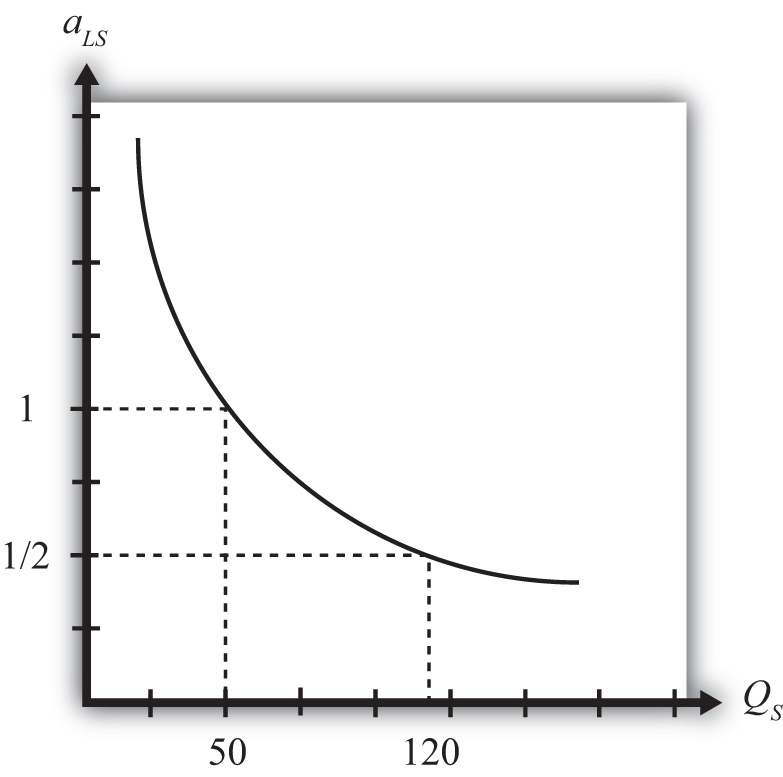

The main reason the presence of economies of scale can generate trade gains is because the reallocation of resources can raise world productive efficiency. To see how, we present a simple example using a model similar to the Ricardian model.
Suppose there are two countries, the United States and France, producing two goods, clothing and steel, using one factor of production, labor. Assume the production technology is identical in both countries and can be described with the production functions in Table 6.1 "Production of Clothing".
Table 6.1 Production of Clothing
| United States | France |
|---|---|
|
where QC = quantity of clothing produced in the United States LC = amount of labor applied to clothing production in the United States aLC = unit labor requirement in clothing production in the United States and France (hours of labor necessary to produce one rack of clothing) ∗All starred variables are defined in the same way but refer to the production process in France. |
|
Note that since production technology is assumed to be the same in both countries, we use the same unit labor requirement in the U.S. and French production functions.
Production of steel. The production of steel is assumed to exhibit economies of scale in production (see Table 6.2 "Production of Steel").
Table 6.2 Production of Steel
| United States | France |
|---|---|
|
where QS = quantity of steel produced in the United States LS = amount of labor applied to steel production in the United States aLS(QS) = unit labor requirement in steel production in the United States (hours of labor necessary to produce one ton of steel) ∗All starred variables are defined in the same way but refer to the production process in France. |
|
Note that it is assumed that the unit labor requirement is a function of the level of steel output in the domestic industry. More specifically, we will assume that the unit labor requirement falls as industry output rises.
Resource constraint. The production decision is how to allocate labor between the two industries. We assume that labor is homogeneous and freely mobile between industries. The labor constraints are given in Table 6.3 "Labor Constraints".
Table 6.3 Labor Constraints
| United States | France |
|---|---|
| LC + LW = L | |
|
where L = labor endowment |
|
When the resource constraint holds with equality, it implies that the resource is fully employed.
Demand. We will assume that the United States and France have identical demands for the two products.
We proceed much as David Ricardo did in presenting the argument of the gains from specialization in one’s comparative advantage good. First, we will construct an autarky equilibrium in this model assuming that the two countries are identical in every respect. Then we will show how an improvement in world productive efficiency can arise if one of the two countries produces all the steel that is demanded in the world.
Suppose the exogenous variables in the two countries take the values in Table 6.4 "Initial Exogenous Variable Values".
Table 6.4 Initial Exogenous Variable Values
| United States | aLC = 1 | L = 100 |
| France | L∗ = 100 |
Let the unit labor requirement for steel vary as shown in Figure 6.3 "Economies of Scale: Numerical Example". The graph shows that when fifty tons of steel are produced by the economy, the unit labor requirement is one hour of labor per ton of steel. However, when 120 tons of steel are produced, the unit labor requirement falls to half an hour of labor per ton of steel.
Figure 6.3 Economies of Scale: Numerical Example
The United States and France, assumed to be identical in all respects, will share identical autarky equilibria. Suppose the equilibria are such that production of steel in each country is fifty tons. Since at fifty tons of output, the unit labor requirement is one, it means that the total amount of labor used in steel production is fifty hours. That leaves fifty hours of labor to be allocated to the production of clothing. The production of clothing has a unit labor requirement of one also, meaning that the total output of clothing is fifty racks. The autarky production and consumption levels are summarized in Table 6.5 "Autarky Production/Consumption".
Table 6.5 Autarky Production/Consumption
| Clothing (Racks) | Steel (Tons) | |
|---|---|---|
| United States | 50 | 50 |
| France | 50 | 50 |
| World Total | 100 | 100 |
The problem with these initial autarky equilibria is that because demands and supplies are identical in the two countries, the prices of the goods would also be identical. With identical prices, there would be no incentive to trade if trade suddenly became free between the two countries.
Despite the lack of incentive to trade in the original autarky equilibria, we can show, nevertheless, that trade could be advantageous for both countries. All that is necessary is for one of the two countries to produce its good with economies of scale and let the other country specialize in the other good.
For example, suppose we let France produce 120 tons of steel. This is greater than the 100 tons of world output of steel in the autarky equilibria. Since the unit labor requirement of steel is one-half when 120 tons of steel are produced by one country, the total labor can be found by plugging these numbers into the production function. That is, since QS∗ = LS∗/aLS∗, QS∗ = 120 and aLS∗ = ½, it must be that LS∗ = 60. In autarky, it took 100 hours of labor for two countries to produce 100 tons of steel. Now it would take France 60 hours to produce 120 tons. That means more output with less labor.
If France allocates its remaining forty hours of labor to clothing production and if the United States specializes in clothing production, then production levels in each country and world totals after the reallocation of labor would be as shown in Table 6.6 "Reallocated Production".
Table 6.6 Reallocated Production
| Clothing (Racks) | Steel (Tons) | |
|---|---|---|
| United States | 100 | 0 |
| France | 40 | 120 |
| World Total | 140 | 120 |
The important result here is that it is possible to find a reallocation of labor across industries and countries such that world output of both goods rises. Or in other words, there is an increase in world productive efficiency.
If output of both goods rises, then surely it must be possible to find a terms of trade such that both countries would gain from trade. For example, if France were to export sixty tons of steel and import thirty racks of clothing, then each country would consume seventy units of clothing (twenty more than in autarky) and sixty tons of steel (ten more than in autarky).
The final conclusion of this numerical example is that when there are economies of scale in production, then free trade, after an appropriate reallocation of labor, can improve national welfare for both countries relative to autarky. The welfare improvement arises because concentrating production in the economies-of-scale industry in one country allows one to take advantage of the productive efficiency improvements.
Some features of the economies-of-scale model make it very different from the other models of trade, such as the Ricardian or Heckscher-Ohlin models. For example, it is possible to show that countries that are identical in every respect might nevertheless find it advantageous to trade. Thus it is not always differences between countries that stimulate trade. In this case, it is a feature of the production process (i.e., economies of scale) that makes trade gains possible.
Second, this economies-of-scale model cannot predict which country would export which good. It doesn’t matter which country produces all the economies-of-scale good. As long as one country does so and trades it with the rest of the world, trade gains are possible. Also, it may not matter whether your country ends up producing the economies-of-scale good or not because both countries will realize the benefits as long as an appropriate terms of trade arises.
Despite these differences with other models, the main similarity is that gains from trade arise because of an improvement in productive efficiency. By reallocating resources between industries within countries, it is possible to produce more output with the same amount of resources. This remains the prime motivation in support of free trade.
Suppose there are two countries with the same production technologies. Let labor productivity in butter production be ten pounds per hour at all levels of output and productivity in gun production be one-half of a gun per hour when gun production is less than ten and two-thirds of a gun per hour when production is ten or more. Suppose each country has fifty hours of labor and in autarky produces eight guns.
Next, suppose Country A produces all the guns in the world while Country B specializes in butter production.